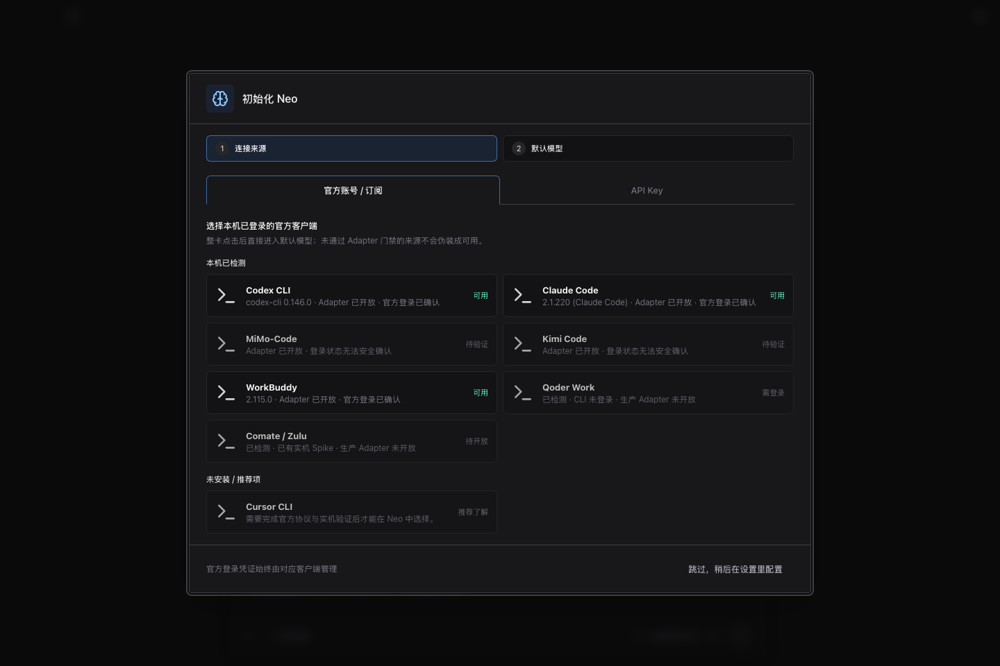
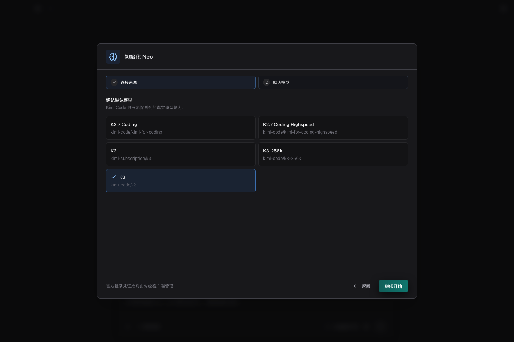
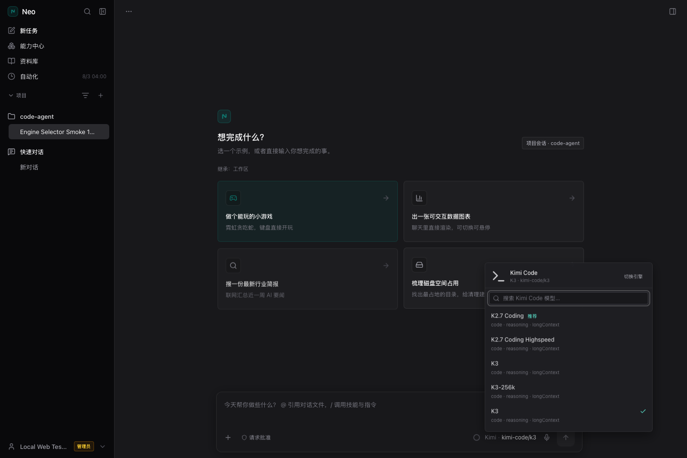
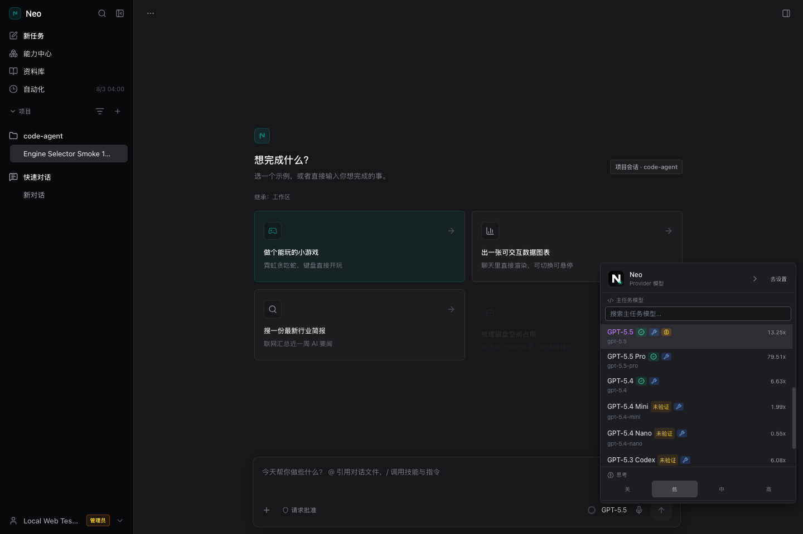

01
Onboarding：连接来源 → 默认模型
只有两步。官方账号/订阅与 API Key 使用清晰 tab；Neo 不在官方客户端列表；各客户端分别展示已适配、仅 Spike、未安装或推荐状态。

从两步 Onboarding 选择本机官方客户端，到真实会话区查看模型边界；WorkBuddy 完成真实对话，Kimi CLI 完成真实登录探测与模型选择。
只有两步。官方账号/订阅与 API Key 使用清晰 tab；Neo 不在官方客户端列表；各客户端分别展示已适配、仅 Spike、未安装或推荐状态。

真实探测本机 kimi 0.30.0，官方 CLI 确认登录后整卡可选；Qoder Work 等只有探测证据、没有生产 Adapter 的来源继续保持不可选。
模型来自官方 CLI 的 provider list --json，默认选择 kimi-code/k3；Neo 不读取或展示 provider 凭证。

弹窗头部明确显示 K3 · kimi-code/k3，下面列出真实模型并标记当前项；外部引擎不再误显示 Neo 专属的 Low / Med / High 控件。

弹窗明确显示由官方客户端选择默认模型。当前客户端没有返回可信目录，Neo 不展示夹具模型，也不伪造 HY、GLM 或权益状态。

Neo 通过生产 Web host 选择 WorkBuddy，以只读配置发出请求；回复 NEO_WORKBUDDY_DEFAULT_20260730_001 同时出现在 SSE 和持久化会话消息中。

Neo 的多档 effort 统一使用已经优化过的 关 / 低 / 中 / 高 四段式控件，不再回退到左侧拥挤、右侧留空的 Low / Med / High 旧样式。

--help 没有返回可枚举模型目录。